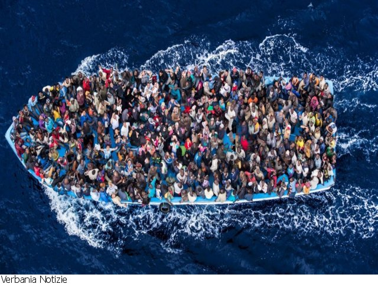

This Tuesday, late in the afternoon, a wave of immigrants was controlled by the gendarmerie at the port of Point-à-Pitre.
A total of 196 migrants from Haiti were intercepted upon arrival at the port of Guadeloupe. It seems, according to their statements, that they would risk their lives by crossing the Atlantic Ocean to seek asylum in the face of violence. and poverty in their country. According to the testimony of some of the refugees, they were not necessarily trying to reach Guadeloupe but just to escape their country. Their decision is linked more precisely to the political, socio-economic and security context of the country, as well as to their family situation. For some, since is their only chance to survive in the face of war? persecution and violence in their country. Others had no choice but to leave with the aim of finding employment to support their own needs or the needs of their family. Finally, some leave Haiti in search of education or simply for a better future.Here is the testimony of a mother present on board the boat: